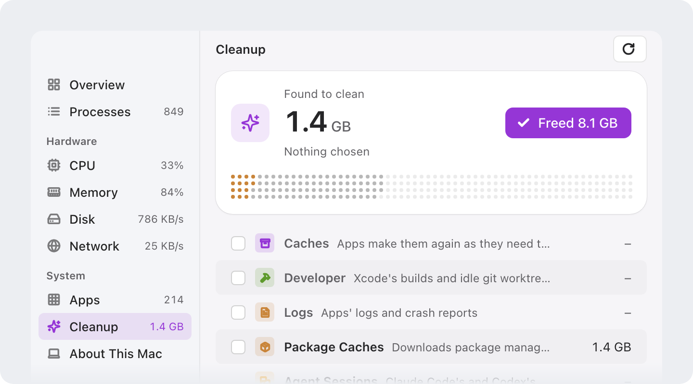
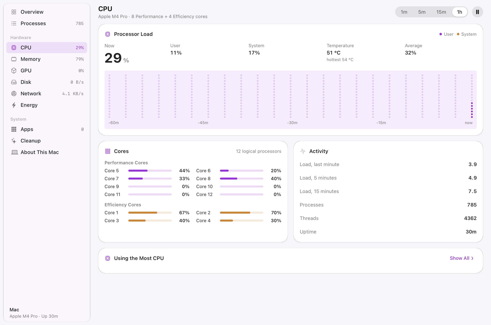
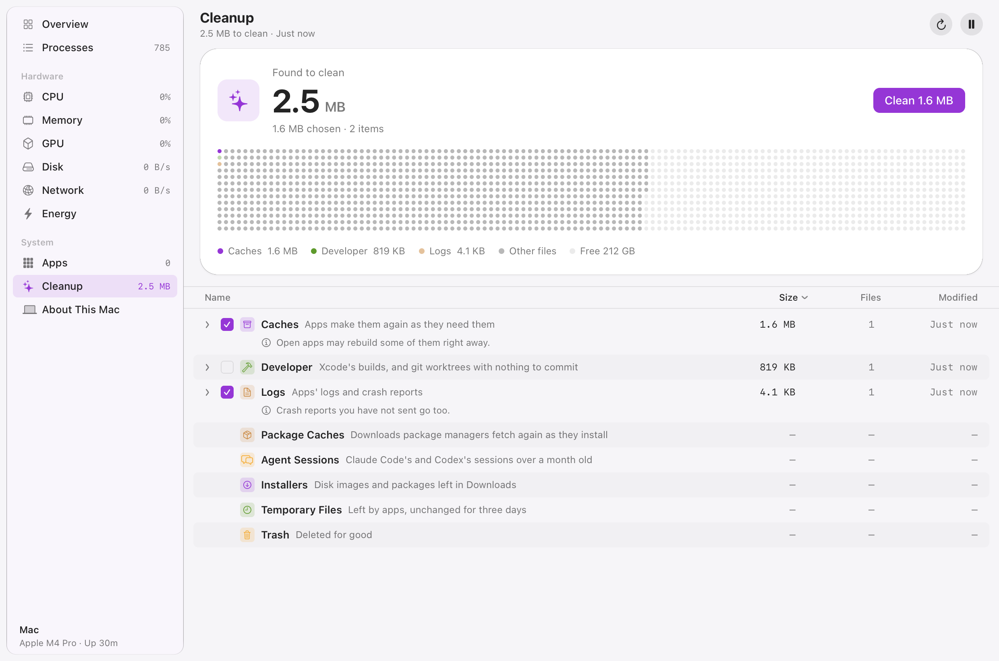
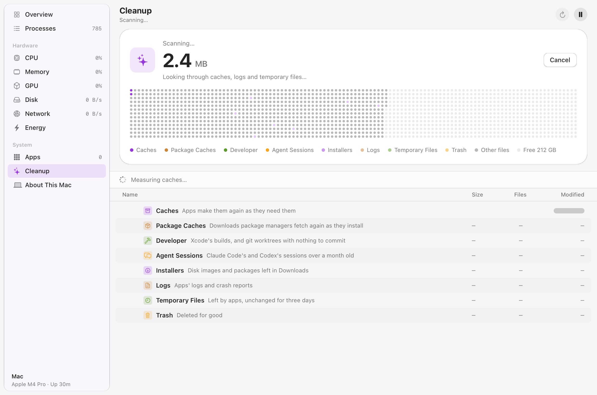
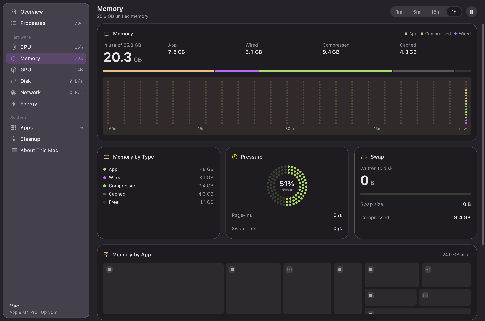

See what fills your Mac. Clear it.
nanokeep finds caches, builds and logs, then shows what each clean frees.

Three screens from the app



What Cleanup looks for
You tick the ones to clear.
- Caches
- Apps make them again as they need them.
- Package caches
- Downloads that package managers fetch again.
- Developer
- Xcode’s builds, and git worktrees with nothing to commit.
- Agent sessions
- Claude Code’s and Codex’s sessions over a month old.
- Installers
- Disk images and packages left in Downloads.
- Logs
- Apps’ logs and crash reports.
- Temporary files
- Left by apps, unchanged for three days.
- Trash
- Deleted for good.
Dark follows your Mac
nanokeep follows the system appearance, light or dark.

git clone https://github.com/fpcMotif/nanokeep.git
cd nanokeep
zig build run